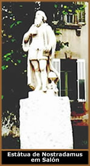

Médico
e Astrólogo
Michael de Notre Dame (pelo nome
latino Nostradamus) nasceu em 14 de dezembro de 1503
na cidade de Saint-Rémy, Provence, França. De pais
judeus, foi o primeiro de 5 filhos do casal Jaume e Reynière,
posteriormente convertidos ao catolicismo.
Desde
a infância, Nostradamus freqüentava a Igreja com assiduidade
e demonstrava interesse por literatura clássica, filosofia
e fundamentos de medicina. Seus avós (ascendentes de Ishacar,
um povo constituído de sábios e profetas) lhe transmitiram
ensinamentos astrológicos, matemáticos e ocultistas;
além de latim, grego e hebraico. Aos 14 anos em Avignon,
deparou-se e aderiu a teoria opositora do Heliocentrismo,
baseada na premissa de que não a Terra, mas o Sol era o
centro do universo.
Em 1522, Nostradamus foi estudar medicina na universidade
de Montpellier. Um médico-astrólogo de origem judaica,
era uma personalidade facilmente visada para os Inquisidores.
Por isso, completou o bacharelado e vagou pela Europa, ganhando
reputação ao curar com ervas os enfermos da peste
bubônica que assolava o século XVI. Ainda que eficientes,
seus métodos medicinais eram muito contestados na época.
Retornou à universidade em outubro de 1529,
concluiu o doutorado e recebeu o chapéu quadrado dos médicos,
o anel de ouro e as obras de Hipócrates. Lecionou nesta
universidade por um ano e voltou a perambular em busca das vítimas
da peste.
Em 1534, Nostradamus estava em Agen quando conheceu
a jovem e rica Adriette du Loubejac. Casou-se e teve dois filhos.
Porém, sua esposa e as crianças foram subitamente
mortas pela peste. Após este fato, Nostradamus foi para
Luxemburgo e isolou-se no mosteiro de Orval.
Na cidade de Marselha, o profeta dedicava-se totalmente
a medicina quando foi convidado por seu irmão, Bertrand,
para ir a Salon. Lá, foi apresentado à rica viúva
Anne Ponsard Gemelle, com quem casou-se novamente e teve três
filhos e três filhas. Nessa época, escrevia e comercializava
um periódico anual sobre a previsão meteorológica
que fazia grande sucesso entre os agricultores locais; além
dos livros de receitas de cosméticos, perfumes e conservação
de alimentos.
As Centúrias
do Profeta
As profecias de Nostradamus eram feitas em profundo
estado de transe. Também utilizava cálculos astrológicos
para definir a data e horário mais adequado. Na Sexta-Feira
Santa de 1554, deu início a sua mais famosa obra: As
Centúrias.
As Centúrias são as profecias compiladas
em 10 livros, sendo que cada um possui 100 quadras (rimas em quatro
linhas, que totalizam 1000 previsões). Não seguem
coerência cronológica, e foram escritas combinando
francês arcaico, grego, latim e um dialeto do sul da França
denominado Languedoc. Além disto, existem anagramas,
referências mitológicas e astrológicas numa
linguagem subjetiva que dificulta a compreensão. Alguns
estudiosos afirmam que esse foi um recurso utilizado para se esquivar
da Santa Inquisição.
A primeira parte das Centúrias foi publicada
em maio de 1555 pela casa Mace Bonhomme, de Lyon. O prefácio
assinado por Nostradamus dedicava o livro a César, seu
filho recém-nascido. A segunda parte foi publicada apenas
em 1557. O trabalho seria concluído em quatro anos.
A
quadra 35 da Centúria I, cita com quatro anos de antecedência
a morte do Rei Henrique II num duelo. Assim, a Rainha Catarina
de Médicis o convocou para fazer o horóscopo dos
nobres. Através da vidência, o profeta ainda resolveu
um caso de roubo da Catedral de Orange. Dessa forma, Nostradamus
conquistou notoriedade pela sua capacidade de prever o futuro
e ficou conhecido como O Mago de Salon.
Em sua totalidade, as Centúrias trazem previsões
generalizadas de acontecimentos significativos da humanidade à
partir de 1557, tais como as guerras mundiais, a revolução
francesa, o assassinato de Kennedy, e o surgimento de Napoleão
e Hitler. O fim do mundo ocorreria no ano 7000, quando o Sol destruiria
a Terra e retomaria sua condição suprema no universo.
Porém, existe uma dúvida se a previsão foi
baseada no calendário judeu ou cristão. O profeta
também anteviu as calúnias que ele próprio
sofreria ao longo dos séculos, e a comercialização
de sua imagem e obra.
A Morte Profetizada
De volta a Salon, Nostradamus construiu um laboratório-observatório
em sua casa. Sofrendo de artrite hidropisia, o profeta preparou
seu testamento em junho de 1566, falecendo no início do
mês seguinte. Os restos mortais foram sepultados no convento
de Cordeliers, segundo sua vontade. A própria
morte está prevista no presságio 141, a última
quadra das centúrias:
"De retorno
da Embaixada, tendo o presente do rei colocado no lugar,
Nada mais fará, será levado a Deus:
Os parentes mais próximos, amigos, irmãos de sangue,
Encontrá-lo-ão morto perto do leito e do banco."
Havia
um mito que Nostradamus teria sido enterrado com um documento
capaz de elucidar todas suas previsões. Em 1700, vândalos
romperam o esquife em busca destas instruções. Encontraram
sobre o esqueleto, um medalhão com a inscrição
1700. O profeta havia antecipado o ano que seu corpo seria exumado.
Em 1791 durante a Revolução Francesa,
soldados antimonarquistas violaram as tumbas do convento e os
ossos de Nostradamus foram espalhados pelo local. Quando souberam
que o profeta havia previsto a queda da monarquia francesa, os
ossos foram devolvidos ao caixão e trasladados para a capela
da Virgem, na igreja de Saint-Laurent, em Salon.
Ao longo dos séculos, o nome de Nostradamus
se tornou um sinônimo de Profecias. As Centúrias
é a segunda obra mais editada em todo o planeta, perdendo
apenas para a Bíblia Cristã. A linguagem codificada
acrescenta uma atmosfera ainda mais misteriosa em torno do tema.
Se analisarmos, as profecias nada mais são que informações,
um produto de grande valor na história da humanidade, e
principalmente nos dias atuais.
Por
Spectrum